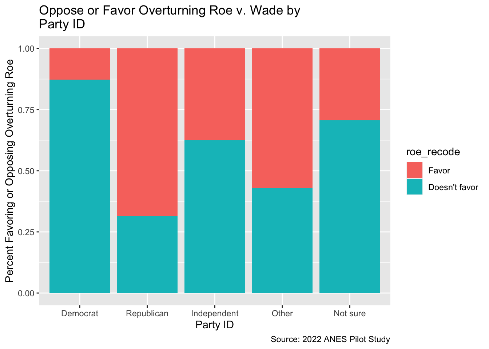
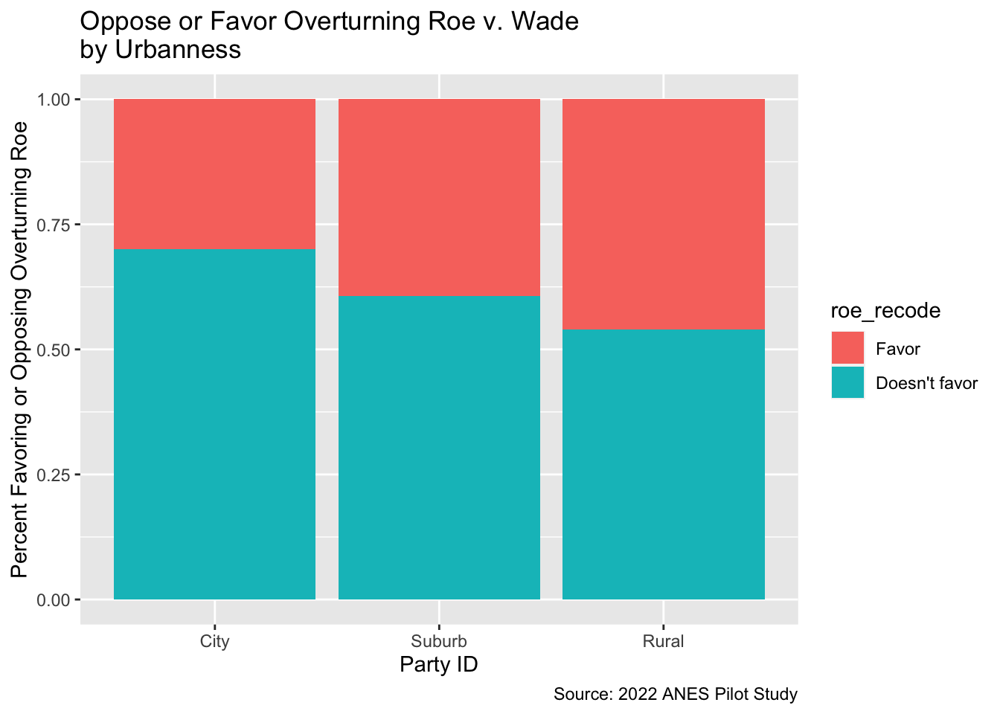
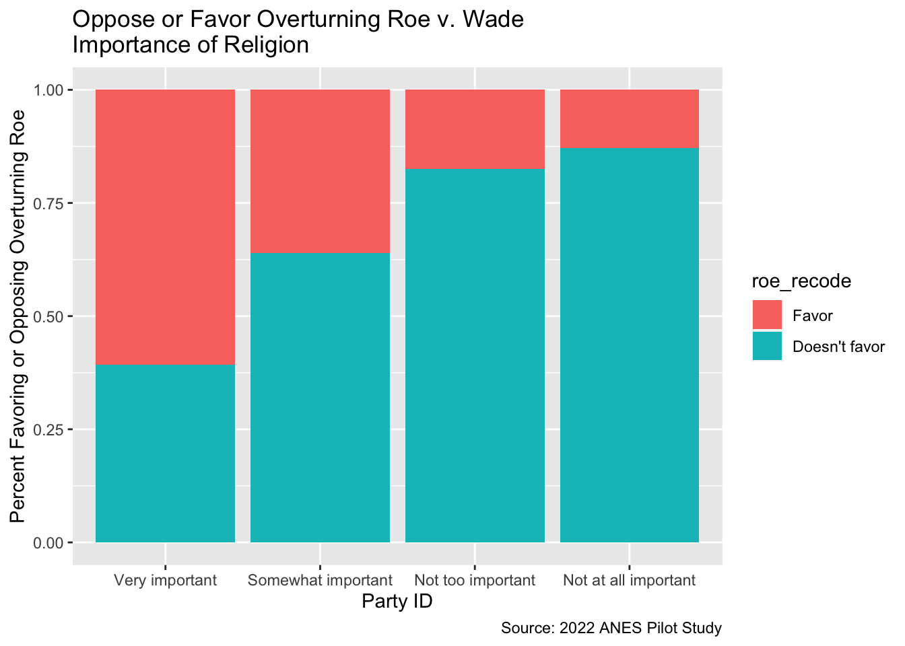

library(tidyverse)
library(haven)
library(hrbrthemes)
library(survey)
library(srvyr)
library(labelled)
library(sjmisc)
library(sjPlot)
library(gmodels)
library(gtsummary)
library(skimr)
library(ggblanket)SA 6: Two or more variable EDA
Find the sample assignment here.
Discussion
I ran three graphs using my recoded Roe v. Wade variable.
The first looked at whether support (or opposition) to overturning Roe varied by political party. Almost all Democrats opposed overturning Roe. A smaller majority of Republicans favored overturning Roe. The other groups were in the middle.
The second graph looked at whether support (or opposition) to overturning Roe varied by where people lived. All groups had majorities of people who didn’t favor overturning Roe. People lived in cities had the largest majorities, followed by suburban and rural Americans. The differences between the three groups were not as large as with party differences.
The third graph examined whether support (or opposition) to overturning Roe varied by the importance of religion in people’s lives. Majority of people for whom religion is very important favored overturning Roe. For the other groups a majority didn’t favor overturning Roe. The percent of opposition went up as religion was less important in people’s lives.
None of the results I found surprised me.
Load Packages
Load Your Dataset
Need help? Go to chapter x in the webbook.
load("another_anes_pilot_smaller_2.RData")Manage your data as needed
Need help? Go to chapter x in the webbook.
Graph & Cross-tab 1
Need help? Go to chapter 4 in the webbook.
another_anes_pilot_smaller_2 |>
as_factor() |>
drop_na(pid3, roe_recode) |>
ggplot(aes(x = pid3, fill = roe_recode)) +
geom_bar(position= "fill") +
ggtitle("Oppose or Favor Overturning Roe v. Wade by \nParty ID") +
labs(x = "Party ID", y = "Percent Favoring or Opposing Overturning Roe", caption = "Source: 2022 ANES Pilot Study") 
Graph & Cross-tab 2
another_anes_pilot_smaller_2 |>
as_factor() |>
drop_na(urbanicity2_recode, roe_recode) |>
ggplot(aes(x = urbanicity2_recode, fill = roe_recode)) +
geom_bar(position= "fill") +
ggtitle("Oppose or Favor Overturning Roe v. Wade \nby Urbanness") +
labs(x = "Party ID", y = "Percent Favoring or Opposing Overturning Roe", caption = "Source: 2022 ANES Pilot Study") 
tab_xtab(another_anes_pilot_smaller_2$roe_recode, another_anes_pilot_smaller_2$urbanicity2_recode, show.col.prc = TRUE, weight.by = another_anes_pilot_smaller_2$weight)| Favor/oppose - overturn Roe v. Wade |
Profile: Urban-rural status |
Total | ||
|---|---|---|---|---|
| City | Suburb | Rural | ||
| Favor | 106 31.7 % |
146 41 % |
145 47.9 % |
397 40 % |
| Doesn't favor | 228 68.3 % |
210 59 % |
158 52.1 % |
596 60 % |
| Total | 334 100 % |
356 100 % |
303 100 % |
993 100 % |
| χ2=17.447 · df=2 · Cramer's V=0.133 · p=0.000 | ||||
Graph & Cross-tab 3 (add more if you want to!)
another_anes_pilot_smaller_2 |>
as_factor() |>
drop_na(pew_religimp, roe_recode) |>
ggplot(aes(x = pew_religimp, fill = roe_recode)) +
geom_bar(position= "fill") +
ggtitle("Oppose or Favor Overturning Roe v. Wade \nImportance of Religion") +
labs(x = "Party ID", y = "Percent Favoring or Opposing Overturning Roe", caption = "Source: 2022 ANES Pilot Study") 
Save your updated dataset?
Need help? Go to chapter 4 in the webbook.